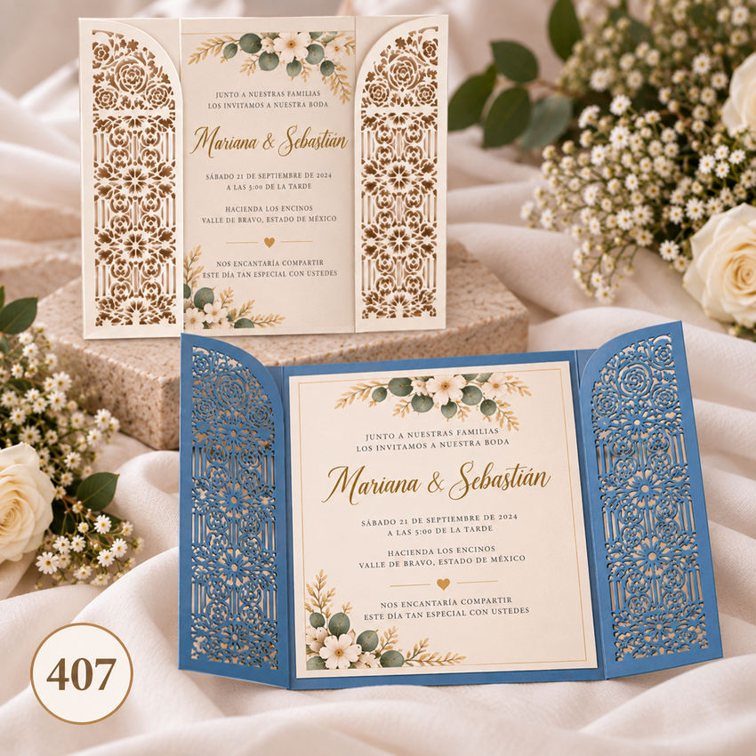

Precio publicado: $1.50 USD por pieza. Confirma cantidad, materiales y personalización al cotizar.
La tarjeta aparece entre paneles calados de apertura lateral. Una forma de dejar sus nombres en el centro de toda la atención. Personalizamos los nombres y los datos de su celebración; consulta colores y acabados para darle su propio estilo. Cuéntanos por WhatsApp la cantidad y la fecha de la boda. Referencia BOD-407. Elaboración bajo pedido y envío gratis a todo El Salvador.
Código para cotizar: BOD-407
Consejo para tu boda
Para comprobar la lectura de una invitación, entrégala cerrada a una persona que no conozca el diseño. Observa dónde busca la apertura y qué información lee primero. Después pídele que te diga la fecha, el lugar y la manera de confirmar asistencia. No la orientes mientras lo hace; sus dudas muestran lo que podría pasar al recibirla. Revisa los detalles que estorben y conserva los que aporten emoción. Un recorrido cómodo no le quita belleza a una pieza elaborada: permite que la forma de abrirla y el mensaje se sientan parte de una misma experiencia.
Anota las dudas que aparezcan sin justificar el diseño de inmediato; a veces una observación sencilla muestra la mejora que necesitaba la pieza.
Lectura relacionada: The Knot: información y texto de las invitaciones.
Consulta colores, nombres, fecha, texto del evento y cantidad. Los materiales, acabados y posibilidades de personalización se confirman según el modelo y tu pedido.
Cotizar este modelo por WhatsAppIndica el código del modelo, cantidad, fecha del evento y colores deseados. Te confirmamos precio, disponibilidad y plazo de entrega antes de realizar el pedido.
Guanaprints atiende en el local de Imprenta Francia, Santa Ana, El Salvador. Envíos gratis a todo El Salvador; coordina el plazo y la entrega al cotizar. WhatsApp: +503 7289-2625.